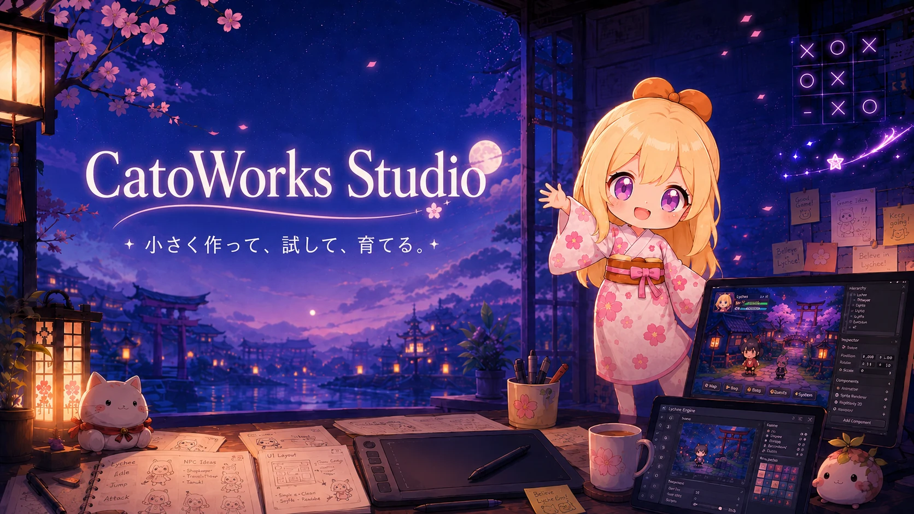
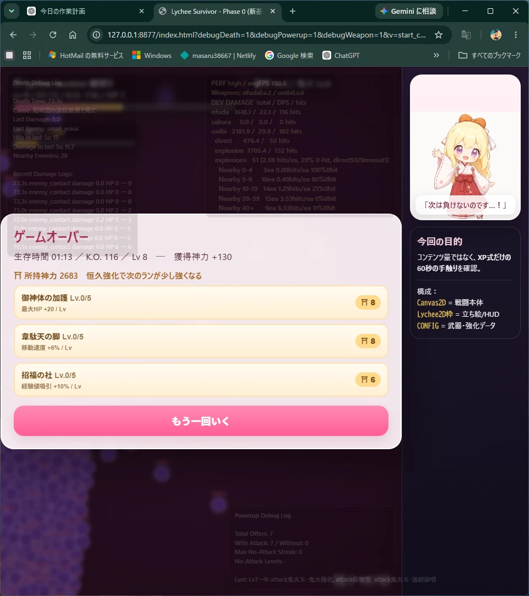

GAME
ライチサバイバーズ
和風の世界を舞台に、巫女ライチが妖怪たちとの修行に挑むサバイバー系ゲーム。
開発中 / 少しずつ成長中

CatoWorks Studioは、ゲームと小さな自作ツールを、ネコスケとAIパートナーたちで作っている小さな制作工房です。
完成品だけでなく、作りながら育てているものも、CatoWorks Studioの大切な作品です。ゲーム作品は実際の画面を掲載しています。
和風の世界を舞台に、巫女ライチが妖怪たちとの修行に挑むサバイバー系ゲーム。

ライチと一緒に遊べる、ブラウザで動く小さな○×ゲーム。CatoWorksの出発点のひとつ。
このホームページ自体も作品のひとつ。小さく始め、作品と一緒に育てていきます。
完成した結果だけでなく、どう考え、どこで失敗し、何を数字で確かめたかも残しています。
走らせ、測り、疑いながら、少しずつ前へ。コース追従、走行距離、コースアウト、減速制御などを、小さなシミュレーターで一つずつ確かめています。
制作中に「これがあれば楽になる」と思ったものを、自分たちのための道具として形にしています。
立ち絵や表情差分、パーツ配置を扱うための制作支援ツール。
効果音やジングル、BGM素材の整理と加工を助ける音まわりのツール。
ゲーム素材の取り込み準備を、迷わず進めるための小さなパッケージ支援ツール。
CatoWorksの自作ツールを、ひとつの入口から開けるようにまとめるハブ。
人間の大人数チームではありません。ネコスケを中心に、AIパートナーと相談しながら制作しています。
企画・判断・制作の中心。思いついたことを、まず形にしてみる人。
設計整理、相談、文章、制作支援を担当するAIパートナー。
設計レビューや検討、長い文脈の整理で力を貸すAIパートナー。
実際のプロジェクトでコード編集や確認を担う開発パートナー。
「まず作る。」
そこから考える。
CatoWorks Studio
CatoWorks Studioは、ゲーム制作を中心に、必要になった道具も自分たちで作りながら進んでいる個人制作スタジオです。
最初から大きなものを完璧に作るより、まず動くものを作り、実際に触り、直し、少しずつ育てていくことを大切にしています。
ここには、完成したものだけではなく、迷った跡や試した跡も残していきます。それも含めて、CatoWorks Studioの作品です。
ゲーム制作、自作ツール、CatoWorks Studioの成長記録を公開しています。お問い合わせはメールで受け付けています。